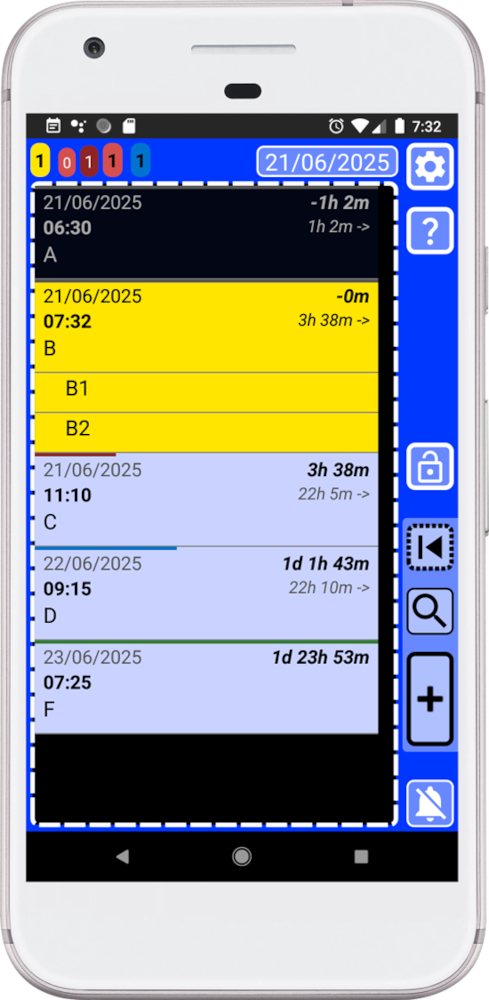

⏮
16. How to pin a record or list?
This feature will allow to pin a record so you have always a quick access to it.
You can pin any record or list — like a shopping list, project ideas, or anything else you are working on. Once pinned, you can instantly access it by long-pressing this button inside the main window (blue).
The button will display a yellow animation with two vibrations to indicate that we are using the secondary function for the button, open pinned record.
Thanks to the pin system:
. As soon as you remember that you need to buy something you can now add it in seconds to your shopping list.
. Add your ideas for your project whenever inspiration hits.
. Or just keep your most used record or list within easy reach.
Fast, no searching, no digging — just open your pinned record and add what you need.
Pinning a record is as easy as long pressing at any record in the main window (blue) list. A yellow animation with two vibrations will indicate that the record has been pinned.
For example, let’s use the list we just created with the B records (highlighted in yellow):

When we create a record and we do not modify anything – we only added a text and save it. The record will be created using the current time and it will not be completed, that is why it will be shown as a yellow record. Please take a look to basic rules help inside the app.
The list with the B records could be our shopping list or something we are currently working on. Since we want quick access to it at any time, we can now pin it to make that easier.
In SECURElogBook time moves like in real life and this affects to the colour of the records creating a visual language that it is explained in the basic rules help manual. The point is that if you are working on something there is a way to pin it. Then you can send to your perfect time in the future or the past.
How to do it?
The main window (blue) list now allows you to long-press on any item to pin a record.
1. Open SECURElogBook and go to the main window, with blue background:
2. Long-press on the record you want to pin – in this case we want to pin the list with B records so we will long-press on the first one.
3. You will see a yellow animation and you will feel two vibrations.
4. A message will pop-up indicating that the record has been pinned.
When a record is pinned, you can move it in time where ever you want, but you will always have a quick access to it.
5. To open the pinned record long-press this button
6. We will see a yellow animation, you will feel two vibrations and the pinned record will be opened.
This is not just another app —it is a complete crafted experience. Every element of the interface follows a precise, consistent design language so users never hesitate. Buttons not only look and act the same, they feel alive, with purposeful feedback through animations and vibrations that respond differently depending on your action. It is fast, smooth, and reassuring, built to eliminate the frustration of missed taps or repeated actions. What you are holding is a unique kind of interface—clear in intent, joyful to use, and engineered with pride. There is nothing else quite like it.
Yes, it can look… different at the first glance because I do not want to do what everyone does, I want more. Despite to look different, it follows a very basic visual logic. Thanks to that, the more you use the app the faster and easier it will get. By the way, that logic it is explained inside the basic rules help manual in your app.